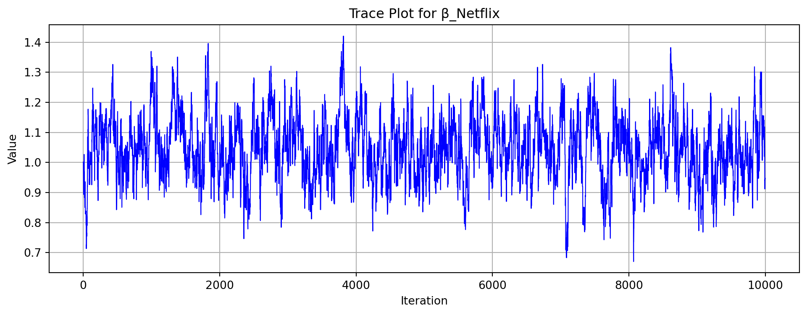
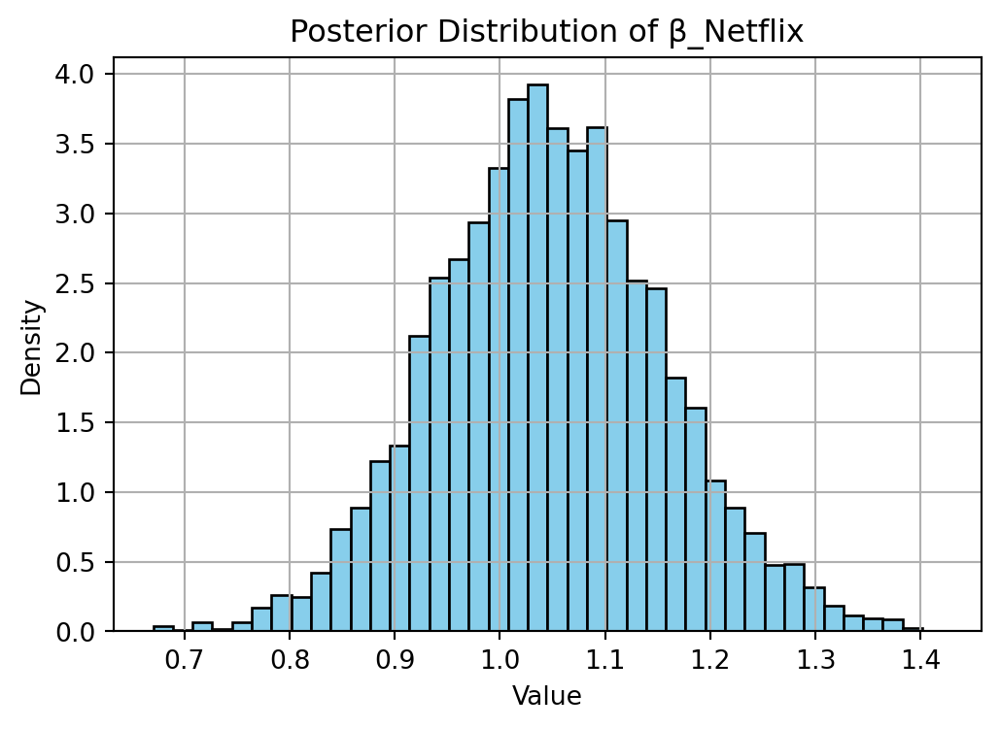

This assignment expores two methods for estimating the MNL model: (1) via Maximum Likelihood, and (2) via a Bayesian approach using a Metropolis-Hastings MCMC algorithm.
1. Likelihood for the Multi-nomial Logit (MNL) Model
Suppose we have \(i=1,\ldots,n\) consumers who each select exactly one product \(j\) from a set of \(J\) products. The outcome variable is the identity of the product chosen \(y_i \in \{1, \ldots, J\}\) or equivalently a vector of \(J-1\) zeros and \(1\) one, where the \(1\) indicates the selected product. For example, if the third product was chosen out of 3 products, then either \(y=3\) or \(y=(0,0,1)\) depending on how we want to represent it. Suppose also that we have a vector of data on each product \(x_j\) (eg, brand, price, etc.).
We model the consumer’s decision as the selection of the product that provides the most utility, and we’ll specify the utility function as a linear function of the product characteristics:
\[ U_{ij} = x_j'\beta + \epsilon_{ij} \]
where \(\epsilon_{ij}\) is an i.i.d. extreme value error term.
The choice of the i.i.d. extreme value error term leads to a closed-form expression for the probability that consumer \(i\) chooses product \(j\):
A clever way to write the individual likelihood function for consumer \(i\) is the product of the \(J\) probabilities, each raised to the power of an indicator variable (\(\delta_{ij}\)) that indicates the chosen product:
We will simulate data from a conjoint experiment about video content streaming services. We elect to simulate 100 respondents, each completing 10 choice tasks, where they choose from three alternatives per task. For simplicity, there is not a “no choice” option; each simulated respondent must select one of the 3 alternatives.
Each alternative is a hypothetical streaming offer consistent of three attributes: (1) brand is either Netflix, Amazon Prime, or Hulu; (2) ads can either be part of the experience, or it can be ad-free, and (3) price per month ranges from $4 to $32 in increments of $4.
The part-worths (ie, preference weights or beta parameters) for the attribute levels will be 1.0 for Netflix, 0.5 for Amazon Prime (with 0 for Hulu as the reference brand); -0.8 for included adverstisements (0 for ad-free); and -0.1*price so that utility to consumer \(i\) for hypothethical streaming service \(j\) is
where the variables are binary indicators and \(\varepsilon\) is Type 1 Extreme Value (ie, Gumble) distributed.
The following code provides the simulation of the conjoint data.
Note
import pandas as pdimport numpy as npimport itertoolsimport random# Set seed for reproducibilityrandom.seed(123)np.random.seed(123)# Define attributesbrand = ['N', 'P', 'H'] # Netflix, Prime, Huluad = ['Yes', 'No'] # Ad included or notprice =list(range(8, 33, 4)) # $8 to $32 in steps of $4# Generate all possible profilesprofiles =list(itertools.product(brand, ad, price))profiles_df = pd.DataFrame(profiles, columns=['brand', 'ad', 'price'])m =len(profiles_df)# Assign part-worth utilities (true parameters)b_util = {'N': 1.0, 'P': 0.5, 'H': 0.0}a_util = {'Yes': -0.8, 'No': 0.0}p_util =lambda p: -0.1* p# Parametersn_peeps =100n_tasks =10n_alts =3# Function to simulate one respondent's datadef sim_one(id): datlist = []for t inrange(1, n_tasks +1):# Randomly sample 3 alternatives sampled = profiles_df.sample(n=n_alts, replace=False).copy() sampled['resp'] =id sampled['task'] = t# Compute deterministic part of utility v = ( sampled['brand'].map(b_util) + sampled['ad'].map(a_util) + sampled['price'].apply(p_util) )# Add Gumbel noise (Type I Extreme Value) e =-np.log(-np.log(np.random.rand(n_alts)))# Total utility u = v + e sampled['choice'] = (u == u.max()).astype(int) datlist.append(sampled)return pd.concat(datlist)# Simulate data for all respondentsconjoint_data = pd.concat([sim_one(i) for i inrange(1, n_peeps +1)], ignore_index=True)# Keep only observable variablesconjoint_data = conjoint_data[['resp', 'task', 'brand', 'ad', 'price', 'choice']]# Display the first few rowsconjoint_data.head()
resp
task
brand
ad
price
choice
0
1
1
P
No
32
0
1
1
1
N
No
28
0
2
1
1
N
No
24
1
3
1
2
H
No
28
0
4
1
2
H
No
8
1
3. Preparing the Data for Estimation
The “hard part” of the MNL likelihood function is organizing the data, as we need to keep track of 3 dimensions (consumer \(i\), covariate \(k\), and product \(j\)) instead of the typical 2 dimensions for cross-sectional regression models (consumer \(i\) and covariate \(k\)). The fact that each task for each respondent has the same number of alternatives (3) helps. In addition, we need to convert the categorical variables for brand and ads into binary variables.
# Convert categorical variables into binary indicatorsconjoint_data['Netflix'] = (conjoint_data['brand'] =='N').astype(int)conjoint_data['Prime'] = (conjoint_data['brand'] =='P').astype(int)conjoint_data['Ad'] = (conjoint_data['ad'] =='Yes').astype(int)# Create a respondent-task-alternative identifierconjoint_data['obs_id'] = conjoint_data['resp'].astype(str) +"_"+ conjoint_data['task'].astype(str)# Sort the data by respondent and task for clarityconjoint_data = conjoint_data.sort_values(by=['resp', 'task'])# Preview the prepared datasetprint(conjoint_data.head())# Confirm structureprint("\nShape:", conjoint_data.shape)print("Columns:", conjoint_data.columns.tolist())
resp task brand ad price choice Netflix Prime Ad obs_id
0 1 1 P No 32 0 0 1 0 1_1
1 1 1 N No 28 0 1 0 0 1_1
2 1 1 N No 24 1 1 0 0 1_1
3 1 2 H No 28 0 0 0 0 1_2
4 1 2 H No 8 1 0 0 0 1_2
Shape: (3000, 10)
Columns: ['resp', 'task', 'brand', 'ad', 'price', 'choice', 'Netflix', 'Prime', 'Ad', 'obs_id']
4. Estimation via Maximum Likelihood
from scipy.optimize import minimize# Extract design matrix X and response yX = conjoint_data[['Netflix', 'Prime', 'Ad', 'price']].valuesy = conjoint_data['choice'].valuesobs_id = conjoint_data['obs_id'].values# Get unique choice setsunique_obs = np.unique(obs_id)# Define negative log-likelihood functiondef neg_log_likelihood(beta): ll =0for obs in unique_obs: rows = (obs_id == obs) X_set = X[rows] y_set = y[rows] utilities = X_set @ beta exp_util = np.exp(utilities) probs = exp_util / np.sum(exp_util) ll += np.sum(y_set * np.log(probs +1e-12)) # add epsilon for stabilityreturn-ll# Initial parameter guess (4 params)beta0 = np.zeros(X.shape[1])# Fit model using MLEres = minimize(neg_log_likelihood, beta0, method='BFGS')# Extract estimates and standard errorsbeta_hat = res.xhessian_inv = res.hess_invse = np.sqrt(np.diag(hessian_inv))# 95% confidence intervalsz =1.96conf_int = np.vstack((beta_hat - z * se, beta_hat + z * se)).T# Display resultsparam_names = ['Netflix', 'Prime', 'Ad', 'Price']results = pd.DataFrame({'Parameter': param_names,'Estimate': beta_hat,'Std_Error': se,'CI Lower': conf_int[:, 0],'CI Upper': conf_int[:, 1]})print(results)
Parameter Estimate Std_Error CI Lower CI Upper
0 Netflix 1.056892 0.141040 0.780454 1.333330
1 Prime 0.473296 0.189452 0.101971 0.844622
2 Ad -0.772384 0.062285 -0.894462 -0.650307
3 Price -0.096418 0.006053 -0.108282 -0.084554
Interpretation of Results:
The coefficient for Netflix (1.06) is large and positive, indicating that consumers have a strong and statistically significant preference for Netflix over the baseline category, Hulu. The 95% confidence interval [0.78, 1.33] does not include zero, confirming significance.
The coefficient for Prime (0.47) is also positive and statistically significant, though smaller than that of Netflix. This suggests that Amazon Prime is preferred over Hulu, but not as strongly as Netflix.
The coefficient for Ads (-0.77) is negative and statistically significant, implying that consumers prefer streaming services that are ad-free. The disutility associated with advertisements is substantial.
The coefficient for Price (-0.096) is negative and significant, indicating that higher prices reduce utility. This reflects the expected price sensitivity: as price increases, the likelihood of a service being chosen decreases.
In summary, consumers prefer Netflix the most, followed by Amazon Prime, with Hulu as the least preferred (baseline). They also strongly prefer ad-free options and are sensitive to price increases.
Parameter Mean SD 2.5% 97.5%
0 Netflix 1.046777 0.107874 0.842035 1.267174
1 Prime 0.458422 0.107107 0.252498 0.668790
2 Ad -0.766680 0.093514 -0.950807 -0.586036
3 Price -0.096486 0.006237 -0.108719 -0.084282
The Bayesian posterior means are very close to the MLE point estimates.
The Bayesian credible intervals slightly differ in width and location — that’s expected due to prior influence and how uncertainty is measured in Bayesian methods.
All intervals are overlapping, which shows strong agreement between frequentist and Bayesian approaches.


Trace Plot and Posterior Distribution for βNetflix
The trace plot for β_Netflix shows good mixing behavior across the 10,000 retained MCMC samples. The parameter values fluctuate consistently around the posterior mean, with no visible trends or stuck regions, indicating effective exploration of the posterior distribution.
The posterior histogram for β_Netflix is approximately bell-shaped and centered around 1.05, which aligns well with the MLE estimate and suggests strong agreement between Bayesian and frequentist approaches.
Overall, the posterior distribution suggests that β_Netflix is clearly positive and tightly concentrated, indicating strong consumer preference for Netflix over the baseline (Hulu) with high certainty.
The plot compares the point estimates and 95% uncertainty intervals for the four model parameters obtained using Maximum Likelihood Estimation (MLE) and Bayesian inference.
For all four parameters (Netflix, Prime, Ad, and Price), the point estimates from both methods are nearly identical, which suggests strong consistency across approaches.
The intervals for Bayesian posterior distributions are generally narrower or similar, reflecting the stabilizing influence of the prior information (especially for Prime and Ad).
All intervals overlap substantially, reinforcing the agreement in both magnitude and direction of the effects.
Overall, the results show that both estimation methods lead to the same substantive conclusions: strong consumer preference for Netflix, moderate preference for Prime, a strong dislike for ads, and clear price sensitivity.
6. Discussion
Suppose we had not simulated the data and were instead working with real-world survey responses. Based solely on the parameter estimates, several intuitive conclusions can be drawn:
The fact that βNetflix > βPrime indicates that, on average, respondents have a stronger preference for Netflix over Amazon Prime, all else being equal. This suggests Netflix is perceived as more desirable, likely due to brand strength, content library, or familiarity.
The negative value of βprice means that as the monthly price of a streaming service increases, the likelihood of it being chosen decreases. This aligns with economic intuition: higher costs reduce utility and thus reduce consumer choice probability.
Together, the signs and magnitudes of the parameter estimates reflect realistic consumer behavior — strong preferences for certain brands, aversion to advertisements (as seen in βAd), and sensitivity to pricing.
In summary, even without knowing the simulation structure, the model outputs align with what we would expect in real-world consumer decision-making contexts.
Extension to a Multi-Level (Hierarchical) Model
To simulate and estimate parameters from a multi-level (hierarchical) conjoint model — which better reflects real-world consumer heterogeneity — we would need to make the following key changes:
Introduce respondent-specific parameters: Instead of a single global vector of coefficients β shared across all individuals, we would allow each respondent i to have their own vector of coefficients βi. These represent individual-level preferences.
Specify a population-level distribution: The individual-level βi vectors would be modeled as random draws from a common multivariate normal distribution: βi ∼ MVN(μ, Σ), where μ is the population mean and Σ is the covariance matrix representing preference variability across respondents.
Data simulation changes: When simulating data, we would draw a unique βi for each respondent and then use that to generate choices over their tasks — thus capturing preference heterogeneity.
Estimation approach: Estimating hierarchical models requires Bayesian MCMC methods, such as Gibbs sampling, Hamiltonian Monte Carlo (HMC), or No-U-Turn Sampler (NUTS) — typically implemented in tools like Stan or PyMC. These methods allow simultaneous estimation of both the respondent-level βi and the group-level hyperparameters μ and Σ.
Why This Matters: Hierarchical models more accurately reflect individual-level preference variation, which is critical for tasks like personalized targeting, segmentation, or forecasting market share in heterogeneous populations.
Conclusion
This project explored the estimation of consumer preferences using a multinomial logit (MNL) model applied to conjoint data. We first simulated hypothetical consumer choices over streaming service attributes (brand, ads, and price), and then estimated the model using two approaches: Maximum Likelihood Estimation (MLE) and Bayesian inference via Metropolis-Hastings MCMC.
Both estimation methods yielded consistent results: consumers showed strong preference for Netflix, followed by Amazon Prime, with Hulu as the baseline. There was significant aversion to advertisements, and price had a negative and significant impact on utility, as expected.
The Bayesian approach not only confirmed the findings of the MLE method but also provided full posterior distributions for each parameter, allowing richer interpretation of uncertainty. Visualizations, including trace plots and posterior histograms, confirmed good convergence and stability of the MCMC algorithm.
Finally, we discussed how this framework could be extended to a hierarchical (random-parameter) model, enabling the capture of individual-level heterogeneity — a key consideration when analyzing real-world conjoint data.
Overall, this exercise demonstrates both the theory and application of discrete choice modeling, providing a solid foundation for analyzing consumer preferences in marketing and product design contexts.